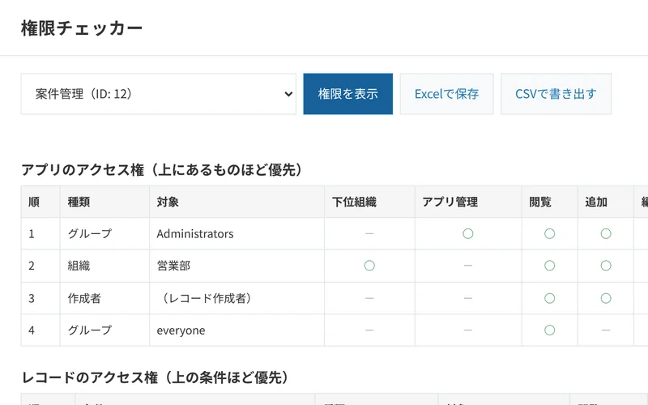
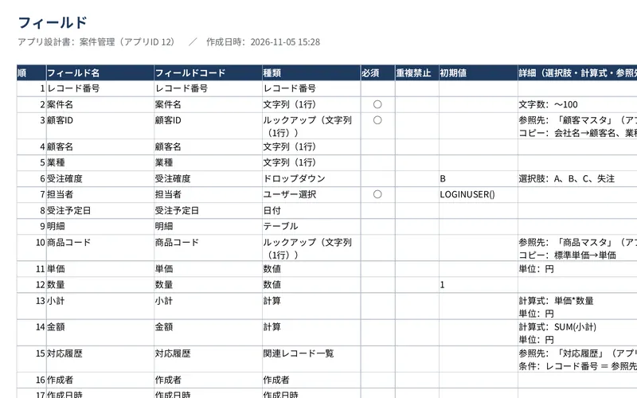
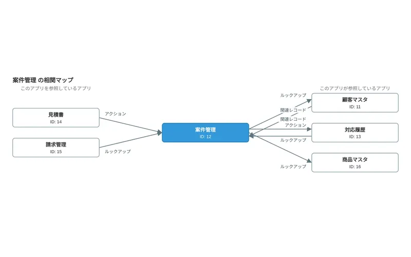
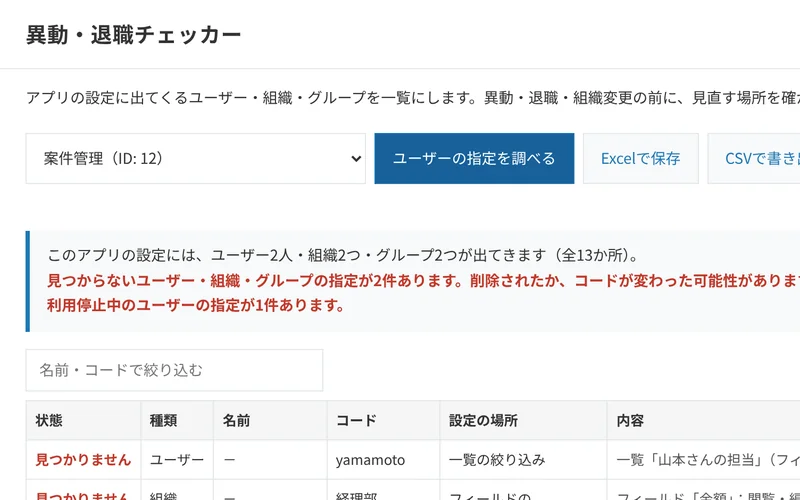
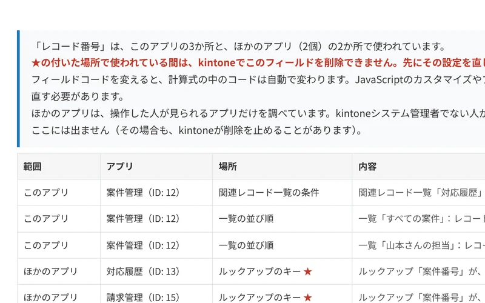
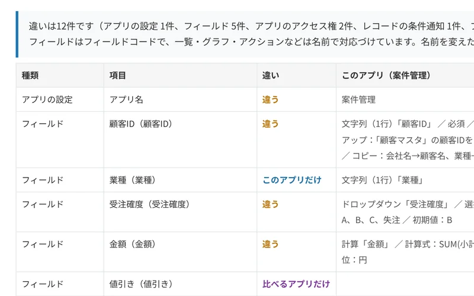

kintone管理者のための点検・資料づくりプラグイン
kintoneの点検と資料づくりを、ボタン1つで
1つのアプリずつ調べるなら無料、全アプリをまとめて点検するなら有料です。有料のプラグインも、30日間すべての機能を無料で試せます。
データは外部に送信しません設定やレコードを変更しませんAPIトークンやパスワードは不要


プラグイン一覧
1つのアプリずつ調べるずっと無料・人数制限なし
-
 権限チェッカー
アプリの権限を、1つの表に
アプリ・レコード・フィールドの3か所に分かれた権限を、1画面にまとめます。監査や点検の記録に。
権限チェッカー
アプリの権限を、1つの表に
アプリ・レコード・フィールドの3か所に分かれた権限を、1画面にまとめます。監査や点検の記録に。
-

 設計書ジェネレーター
設計書を、Excelで自動作成
フィールド・一覧・プロセス管理・通知・権限まで、表紙を含む8シートの設計書に。引き継ぎや監査の資料に。
設計書ジェネレーター
設計書を、Excelで自動作成
フィールド・一覧・プロセス管理・通知・権限まで、表紙を含む8シートの設計書に。引き継ぎや監査の資料に。
-

 アプリ相関マップ
アプリのつながりを、図で確認
ルックアップ・関連レコード一覧・アクションでつながるアプリを図にします。アプリを直す前の確認に。
アプリ相関マップ
アプリのつながりを、図で確認
ルックアップ・関連レコード一覧・アクションでつながるアプリを図にします。アプリを直す前の確認に。
-

 異動・退職チェッカー
退職した人の指定を、見つける
権限・プロセス管理・通知・一覧の条件に出てくる人を一覧にし、退職した人やなくなった組織に印を付けます。
異動・退職チェッカー
退職した人の指定を、見つける
権限・プロセス管理・通知・一覧の条件に出てくる人を一覧にし、退職した人やなくなった組織に印を付けます。
-

 フィールド影響チェッカー
フィールドが使われている場所を、一覧に
計算式・一覧・通知から、ほかのアプリのルックアップまで調べます。フィールドを消す前の確認に。
フィールド影響チェッカー
フィールドが使われている場所を、一覧に
計算式・一覧・通知から、ほかのアプリのルックアップまで調べます。フィールドを消す前の確認に。
-

 アプリ設定の比較
2つのアプリの違いを、一覧に
本番と検証、コピー元とコピー先の設定を比べ、違うところだけを表示します。反映漏れの確認に。
アプリ設定の比較
2つのアプリの違いを、一覧に
本番と検証、コピー元とコピー先の設定を比べ、違うところだけを表示します。反映漏れの確認に。
無料の6本と、有料の1本の関係
有料のプラグインは、無料の6本で1つずつ調べることを、全アプリまとめて行い、1つの点検台帳と報告書にします。
無料の6本は、1つのアプリを直す前や、問い合わせを受けたときに。全アプリを定期的に点検して報告するときは、有料の1本で（30日間無料で試せます）。両方を同じkintoneで一緒に使えます。
サイボウズの「kintoneガバナンスガイドライン」や「運用ルール（応用編）」でも、アプリやプラグインの定期的な棚卸し（半年に1回など）や、重要なアプリの設計資料の作成がすすめられています。
全アプリをまとめて点検する年額33,000円から・30日間無料で試せる
棚卸し・変更監視パック
年額33,000円から（税込・月あたり2,750円） 30日間 無料で試せる
無料の6本で1つずつ調べることを、全アプリまとめて行います。注意点をすべて一覧にした点検台帳（Excel）と、上司に報告できる1枚の報告書、前回の点検からの変更点を作ります。
料金
無料の6本は、ずっと無料です。全アプリをまとめて点検する有料のプラグインは、次の流れで使い始められます。
件数だけの無料点検
申し込み不要・ずっと無料
プラグインを入れて「無料で点検する」を押すと、全アプリの見直したほうがよい設定が「何件あるか」と、例が2つまで分かります。
30日間の無料試用
申し込み制・すべての機能・環境ごとに1回
「どのアプリの、どの設定か」まですべて一覧にし、点検台帳と報告書も作れます（「試用版」と入ります）。棚卸しや監査の時期に合わせて申し込めます。
ご契約
年額33,000円から（月あたり2,750円）
社内に出す正式な点検台帳と報告書を作れます。試用で作った点検台帳と比べて、変わったところと推移も分かります。
全アプリをまとめて点検する（棚卸し・変更監視パック）
年額33,000円から（税込）
| アプリ100個まで | 年額33,000円（月あたり2,750円） |
|---|---|
| アプリ500個まで | 年額99,000円（月あたり8,250円） |
| アプリの数の上限なし | 年額198,000円（月あたり16,500円） |
- 件数だけの無料点検
- 申し込み不要・ずっと。見直したほうがよい設定が「何件あるか」と、例が2つまで分かります
- 30日間の無料試用
- 申し込み制・カード不要・環境ごとに1回。すべての機能で「どのアプリの、どの設定か」まで一覧にし、点検台帳と報告書も作れます（「試用版」と入ります）
どちらも、kintoneのスタンダードコース・ワイドコースで使えます（ライトコースはプラグインに対応していません）。
使い始めるまで
- ダウンロード各プラグインのページから、zipファイルを保存します。
- kintoneに読み込む「kintoneシステム管理」の「プラグイン」で、zipファイルを読み込みます。
- アプリに追加使いたいアプリにプラグインを追加し、「アプリを更新」を押すと、一覧画面にボタンが出ます。
プラグインの読み込みには、kintoneシステム管理者の権限が必要です。
kintoneに入れる前に試せます。架空の会社のアプリを使ったデモで、7つのプラグインをブラウザでそのまま操作できます（登録不要）。
デモを試す安心してお使いいただくために
- 外部と通信しません通信するのはお使いのkintoneだけです。台帳屋のサーバーや外部サービスとは通信しません。
- 設定やレコードを変えません読み取るのはアプリの設定だけです（「使われていないアプリ」を調べるときだけ、レコードの件数と最終更新日時を確かめます）。
- APIトークン・パスワードは不要ログイン中のユーザーの権限で動きます。
- 中身を確かめられますコードは圧縮・難読化していないため、情報システム部門で中身を確認できます。
よくあるご質問
何が無料で、何が有料ですか？
1つのアプリずつ調べる6本のプラグインは、ずっと無料です。全アプリをまとめて点検する「棚卸し・変更監視パック」の1本だけが有料です（年額33,000円から）。この有料のプラグインも、30日間はすべての機能を無料で試せます（カードの登録不要・自動で課金されません）。件数だけの点検は、いつでも無料です。
件数だけの無料点検と、30日間の無料試用は、何が違いますか？
どちらも無料で、同じプラグインを使います。件数だけの無料点検は申し込み不要でずっと使え、見直したほうがよい設定が「何件あるか」と、例が2つまで分かります。30日間の無料試用は申し込み制（カード不要・環境ごとに1回）で、すべての機能を使って「どのアプリの、どの設定か」まで一覧にし、点検台帳（Excel）と報告書も作れます（「試用版」と入ります）。見本で違いを見る
試用で作った資料は、そのまま社内に出せますか？
試用中に作る点検台帳と報告書には「試用版」と入ります。社内に出す正式な資料は、ご契約のあとに同じ操作で作成してください。試用で作った点検台帳は、次の点検で「前回の点検台帳」として使えます。試用は、kintoneの環境ごとに1回です。
利用人数やアプリ数に制限はありますか？
無料のプラグインは、利用人数やアプリ数の制限はありません。有料のプラグインは、アプリの数で3つのプラン（100個まで・500個まで・上限なし）があり、利用人数による追加料金はありません。
アプリの管理者でなくても使えますか？
設定の読み取りには、そのアプリの管理権限が必要です。権限が足りない項目は、その旨を画面に表示します。
使えない画面やアプリはありますか？
パソコン版の画面のみに対応しています。ゲストスペースのアプリには、現在対応していません。
新しい版が出たら、どうすれば更新できますか？
新しい版のzipファイルを、最初と同じように「kintoneシステム管理」の「プラグイン」で読み込むと、上書きされます。アプリへの追加をやり直す必要はありません。
サイボウズの製品ですか？
いいえ。サイボウズ株式会社とは関係のない、個人の開発者による製品です。
不具合や要望は、どこに連絡すればよいですか？
daichoya.plugins@gmail.com までお知らせください。返信は平日の夜と土日に行っています。
使い方ガイド
プラグインを使わずに確認する方法も含めて、作業の手順をまとめています。
まずは、無料で試してください
1つのアプリずつ調べる6本は、ずっと無料です。全アプリをまとめて点検する有料のプラグインも、30日間すべての機能を無料で試せます。kintoneに入れる前に、デモで7本すべてを試すこともできます。
台帳屋は個人で開発・運営しています。不具合の修正やkintoneの仕様変更への対応は、各プラグインのページの更新履歴でお知らせします。